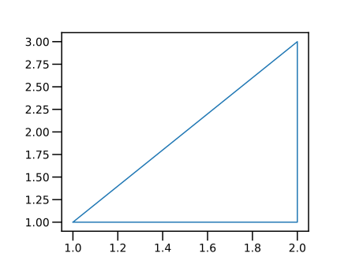

第1回：▼ 簡単なグラフを描く
■ 対話形式で使う
本文では、対話形式で、Julia を利用する。
Juliaをコマンドラインから利用している場合は、 プロンプト julia> が印字され、利用者の入力を待っている。
命令を打ち込み、ENTERキーを押すと、 その命令を計算(評価)した結果が印字される。
julia> 1
1上の例では、1 という文字の並びから、 1 という数を内部で作成し、 それを計算の結果として印字したのである。
計算機側から見ると、 利用者の入力を読み込み(Read)、 入力された命令を評価し(Eval)、 その結果を印字する(Print)ことを、繰り返す(Loop)。 この４つの頭文字をとって、 対話型利用のことを REPL とも呼ぶ。
Jupyter notebookを用いる場合には、 Code cellが表示されている。 ここに命令を打ち込み、SHIFT + ENTER キーを押すと、 その命令を評価した結果が出力される。
■ 電卓として使う
数と数との四則演算をしてみよう。
加算には + 、 減算には - の文字を使う。 乗算には * (アスタリスク astarisk と読む)、 除算には (% ではなくて) / (スラッシュ slash と読む)の文字を用いる。
julia> 1 + 2
3
julia> 3 * 4
12数式と同じように、乗算と除算は、加算・減算に優先する。 計算の順序を変えるには、括弧 ( と ) との組を用いる
julia> 2 + 3 * 4
14
julia> (2 + 3) * 4
20除算の結果は、小数となる。
julia> 2 / 2
1.0
julia> 1 / 3
0.3333333333333333
julia> 5 / 2
2.5■ 変数に値を代入する
値には、名前（名札、ラベル）をつけることができる。 この名前を変数といい、名前をつける操作を「値を変数に代入する」という。 変数には、色々な種類の値を代入できる。
変数を評価すると、変数の値となる。
julia> # 変数 x に 値 2 を代入する
x = 2
2
julia> # 変数 x の値を用いる
x + 1
3
julia> # 変数 x に 別の値 3 を再代入する
x = 3
3# はコメントである。 # から行末までの文字は全て無視される。
■ 変数名の規則
Allowed Variable Names (section)
変数の名前（変数名)は、以下のようにつける。
変数名の最初の文字は、半角のアルファベット (aからzまで、AからZまで)、 または、下線（アンダースコア _)のいずれかでなければならない。 変数の2文字目以降は、さらに、半角の数字 (0から9)、 または、半角の感嘆符 ! を含めることができる。
半角文字とは「かな漢字変換機能」を用いずに、 キーボードから打ち込める文字と考えてよい。
変数名には、漢字やギリシャ文字などを使うことができるが、 ここでは説明を省略する。
Stylistic Conventions (section)
今後出現する、定数、型、関数、マクロ、モジュール、パッケージの名前も、変数名の約束と同じである。 ただし、慣習として、以下のように使い分ける。
- 変数名は小文字で始める。
- 型、モジュール、パッケージの名前は大文字で始める。
- 関数やマクロの名前は小文字で始める。下線（アンダースコア
_)は用いない。
■ ベクトル
角括弧 [ と ] との間に、カンマ , で区切って 数を並べたものを、(数の)ベクトルという。
ベクトルは、縦に印字される (列ベクトル, column vector)。
julia> [1,3,2]
3-element Array{Int64,1}:
1
3
2変数に、ベクトルを代入しよう。
julia> xs = [1,2,2,1]
4-element Array{Int64,1}:
1
2
2
1
julia> ys = [1,1,3,1]
4-element Array{Int64,1}:
1
1
3
1本文の筆者は、(ベクトルなど)複数の値を内部に含むデータに対する変数の名前を「英語の複数形の名詞」とすることが多い (多くの場合、末尾を s で終える)。そのデータの各要素を表す変数の名前を単数形とする。（大文字は定数などを表す約束だから）大文字と小文字で、ベクトルなどとその要素を区別することは避けた方がよい。
ベクトル v とスカラー c とに演算子 * を適用する v * c と、各要素をスカラーで乗じたベクトルが得られる。 スカラーとベクトルとに演算子 * を適用する c * v と、同じ結果が得られる。
julia> xs * 2
4-element Array{Int64,1}:
2
4
4
2
julia> 2 * xs
4-element Array{Int64,1}:
2
4
4
2ベクトル v とスカラー c とに演算子 / を適用する v / cと、各要素をスカラーで除したベクトルが得られる。
julia> xs / 2
4-element Array{Float64,1}:
0.5
1.0
1.0
0.5ベクトルとスカラーとに、演算子 .+ と .- を適用する v .+ c あるいは v .- c と、ベクトルの各要素をスカラーで加減したベクトルとなる。 +や-の前のピリオド . は「各要素に対する演算」を意味する。
julia> xs .+ 2
4-element Array{Int64,1}:
3
4
4
3
julia> xs .- 2
4-element Array{Int64,1}:
-1
0
0
-1この場合、ピリオドが付かない演算子 +や - を用いると、例外 (exception, エラー)となる。
julia> xs + 2
ERROR: MethodError: no method matching +(::Array{Int64,1}, ::Int64)▼ 三角形を描く
「パッケージ」とは、関連する関数、定数、変数などをまとめたものである。
PyPlot パッケージは、 グラフを描くためのパッケージの一つである。
パッケージを用いるには、using <<パッケージ名>> を起動し、パッケージを読み込んでおく。
PyPlot パッケージに含まれる関数 plot は、グラフを描くための一般的な関数である。
plot(xs,ys) の形で用いると、 ベクトル xs, ys から一つづつ数を取り出し。 それらを各々 x座標, y座標とする点を打つことを命令する。
通常は、plt.plot() の形で用いる。 plt は、図の寸法や、グラフの軸を含む[オブジェクト]である。
# PyPlot パッケージの読み込み
using PyPlot
xs = [1,2,2,1]
ys = [1,1,3,1]
# 描画
plt.plot(xs,ys)
▲ 練習
xs や ys の値を変えて、別の図形を表示してみよ。
xs と ys の要素の「数」が等しくない場合は、どうなるか？ 試してみよ。
■ Range型
二つ、または、三つの数字をコロン(:) で区切ったデータは、 有限の(= 要素の数が定まった)等差数列 (arithmetic sequence)を表す (Range型)。
「型」とは「データの種類」である。詳しくは、後の節で述べる。→ ■ 型
二つの数をコロン (:) で区切った量 a:b は、 a から 1 づつ増やして、b を超えるまでの数からなる等差数列である。 三つの数をコロンで区切った量 a:c:b は、 a から c づつ増やして、b を超えるまでの数からなる等差数列である。 c は、等差 (common difference) である。
一定間隔 c を「等差 (common difference)」と本文では呼ぶ。数学では「公差」と呼ばれることもあるが、工学での「公差」は tolerance を意味することが多い。
julia> 1:5
1:5
julia> xs=0:0.1:1
0.0:0.1:1.0Range型の量から各要素を取り出してベクトルに変換するには、 collect関数を用いる。
julia> collect(xs)
11-element Array{Float64,1}:
0.0
0.1
0.2
0.3
0.4
0.5
0.6
0.7
0.8
0.9
1.0等差 c は、負の値でもよい。 この場合、a:c:b は、a から c づつ増やして、 b を「下回る」までの数からなる等差数列となる。
julia> xs=10:-1:0
10:-1:0
julia> collect(xs)
11-element Array{Int64,1}:
10
9
8
7
6
5
4
3
2
1
0等差 c が負で、$a < b$ だと、要素は 0個になる。
julia> xs=2:-1:5
2:-1:3
julia> collect(xs)
0-element Array{Int64,1}■ Range型のスカラーによる乗除
Range型 v とスカラー c とに演算子 * を適用する v * c と、 各要素にスカラーで乗じた結果に相当するRange型が得られる。 スカラーとRange型とに演算子 * を適用する c * v と、同じ結果が得られる。
julia> xs=0:2:10
0:2:10
julia> # 各要素を 2倍する
xs * 2
0:4:20
julia> 2 * xs
0:4:20Range型とスカラーとに演算子 / を適用する v / c と、 各要素にスカラーで除した結果に相当するRange型が得られる。
julia> # 各要素を 2で除す
xs / 2
0.0:1.0:5.0Range型とスカラーとに、演算子 .+ と .- を適用する v .+ c あるいは v .- c と、Range型の各要素をスカラーで加減した結果に相当するRange型が得られる。 演算子 +, - を用いると、例外 (exception, エラー)となる。
julia> # 各要素に 1 を加える
xs .+ 1
1:2:11
julia> # 各要素から 0.2 を引く
xs .- 0.2
-0.2:2.0:9.8▼ 式のグラフを描く
plot関数に対して、二つのコレクション xs、ys を渡すと、 xs、ys から一つづつ要素を取り出し、 これらを x, y 座標とする点同士を結んで、図形が描かれるのであった。
式のグラフを描くには、xs から計算した式の値を、ysに与えればよい。
二つの直線 $y=-x$ と $y=2x-1$ のグラフを描いてみよう。
# PyPlot パッケージの読み込み
using PyPlot
xs=-1:0.1:1
# 描画
ys1=-1*xs
plt.plot(xs,ys1)
ys2=2*xs .- 1
plt.plot(xs,ys2)▲ 練習
別の直線を描いてみよ。
★ 今回のまとめ
- 対話形式の使い方
- 数の四則演算
- PyPlotパッケージを用いた図形とグラフの描画
- ベクトルと等差数列